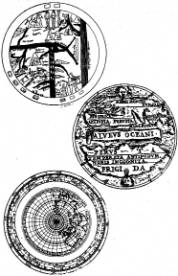

Harita ülke değildir.
(Alfred Korzybski, Science and sanity, 1933, 4. bas., The International Non-Aristotelian Library, 1958, II, 4, s. 58)
“Tapınakçılar zamanında haritacılığın durumunu biliyorsunuz,” dedim. “O yüzyılda, başka şeylerin yanı sıra, Afrika’yı yukarıda, Avrupa’yı aşağıda gösteren Arap haritaları, koşullar göz önüne alınırsa oldukça doğru denizci haritaları, üç-dört yüzyıl öncesinden kalma, ama hâlâ okullarda kullanılan haritalar dolaşıyordu ortalıkta. Umbilicus’un yerini açıklamak için, sözcüğün günümüzdeki anlamıyla, doğru bir haritaya gereksinimleri olmadığını gözden kaçırmayın. Şu özellikte bir harita olması yetiyordu: yönlendirildiğinde, 24 Haziran günü tan sökümünde, Sarkaç’ın üstüne ilk güneş ışınının düştüğü noktada Umbilicus’u göstermesi. Şimdi dikkat edin: Salt bir varsayım olarak, tutalım ki, Umbilicus Kudüs’tedir. Çağdaş haritalarda bile, Kudüs’ün yeri, nasıl yansıtıldığına bağlıdır. Kimbilir Tapınakçılar’ın elindeki harita, nasıl bir haritaydı? Ama onlar için ne önemi vardı bunun? Sarkaç haritanın işlevine bağlı değildi; harita Sarkaç’ın işlevine bağlıydı. Anlıyorsunuz, değil mi? İsterse dünyanın en saçma haritası olsun, yeter ki Sarkaç’ın altına konduğunda, 24 Haziran tan sökümünde, güneşin yazgı belirleyici ilk ışını o harita üstünde -yalnızca o harita üstünde- Kudüs’ün bulunduğu noktayı göstersin.”
“Ama bu bizim sorunumuzu çözmez,” dedi Diotallevi.
“Elbette çözmez; otuz altı görünmezin sorununu da çözmez. Çünkü elinde doğru harita yoksa, hiçbir şey çıkmaz. Kurallara göre yönlendirilmiş bir harita düşünelim; doğu, apsis doğrultusunda, batı ise, nef doğrultusundadır; çünkü kiliseler buna göre yönlendirilmiştir. Şimdi, rastgele bir varsayım yapalım; diyelim ki, o yazgı belirleyen tan sökümünde, Sarkaç hafifçe doğuya doğru bir bölgede, hemen hemen güneydoğu çeyreğinin sınırında bulunsun. Bir saat düşünürsek, akrep beşi, yelkovan yirmi beşi göstersin. Tamam mı? Şimdi bakın.”
Gidip bir haritacılık tarihi arayıp buldum.

“İşte. Numara bir: bir XII. yüzyıl haritası. T biçiminde bir harita. Yukarıda Yeryüzü Cenneti ile Asya, solda Avrupa, sağda Afrika; Afrika’nın ötesine Antipodları da koymuşlar. Numara iki: Macrobius’un Somnium Scipionis’inden esinlenmiş bir harita; çeşitli değişkelerle on altıncı yüzyıla dek varlığını sürdürmüş. Afrika biraz dar, ama önemi yok. Şimdi dikkat edin, iki haritayı aynı biçimde yönlendirin; birinci haritada, beş yirmi beşin Arabistan’a, ikincisinde ise, Yeni Zelanda’ya denk düştüğünü göreceksiniz; ikinci haritada, bu noktada Antipodlar var çünkü. Sarkaç’la ilgili her şeyi bilebilirsin, ama hangi haritayı kullanacağını bilmezsen yandın. Mesaj belki de bu amaçla özel olarak çizilmiş- doğru haritanın nerede bulunacağına ilişkin alabildiğine şifreli yönergeler kapsıyordu. Mesajda, haritanın nerede, hangi elyazmasında, hangi manastır ya da şatoda aranması gerektiği belirtiliyordu. Hatta belki Dee ya da Bacon ya da bir başkası mesajı yeniden oluşturmuş bile olabilir. Kimbilir? Mesajda, haritanın filanca yerde olduğu söyleniyordu, ama bu arada, Avrupa’da bütün olup bitenler sırasında haritanın bulunduğu manastır yanmış, ya da harita çalınmış, kimbilir nerede saklanmıştı. Belki de haritayı elinde bulunduran biri var, ama neye yaradığını bilmiyor, ya da bir şeye yaradığını biliyordur da, tam olarak ne olduğunu bilmiyordur; bu yüzden dünyayı dolaşıp onu satın alacak birini arıyordur. Ortalıkta dolaşan bütün bu öneriler, yanlış ipuçları, başka bir şey söyleyen, ama sanki haritadan söz ediyormuş gibi okunan, haritadan söz eden, ama ne bileyim altın üretilmesini anıştırıyormuş gibi okunan mesajlar karmaşasını düşünün. Hiç kuşkusuz, bazı kimseler varsayımsal temellere dayanarak haritayı doğrudan doğruya kurmaya çalışıyorlar.”
“Ne gibi varsayımlar?”
“Örneğin, mikro-makrokozmik denklikler. Burada bir harita daha var. Nereden alındığını biliyor musunuz? Robert Fludd’ın, Utriusque Cosmi Historia’sındaki ikinci incelemeden. Unutmayalım, Fludd, Gül-Haçlar’ın Londra’daki adamıdır. Şimdi ne yapıyor bizim -kendisine böyle denmesinden hoşlanıyordu- Robertus de Fluctibus? Artık bir harita koymuyor ortaya, yerkürenin tuhaf bir yansımasını koyuyor. Kutbun bakış açısından; doğal olarak gizemsel Kutbun, dolayısıyla da tasarımsal bir tonozun kilittaşına asılı tasarımsal bir Sarkaç’ın bakış açısından. Sarkaç’ın altına konmak için özellikle tasarlanmış bir haritadır bu! Tartışılmaz bir biçimde açık. Nasıl oldu da, şimdiye dek hiç kimsenin aklına gelmedi...”
“Çünkü Şeytancılar’ın kafası yavaş, çok yavaş çalışır,” dedi Belbo.
“Çünkü bizler, Tapınakçılar’a lâyık biricik kalıtçılarız. Neyse, biz sürdürelim: Taslağı biliyorsunuz, devingen bir tekerlek, Tritemius’un şifreli mesajlarında kullandıklarına benziyor. Bu bir harita değil. Bir makine taslağı, doğru harita bulununcaya dek harita Çeşitlemeleri üreten bir makine! Fludd’ın kendisi de, yapıtın başlığında söylüyor bunu: bu bir instrumentum241 taslağıdır; üstünde biraz daha çalışılması gerekir.”
“Ama dünyanın döndüğünü yadsımakta direnen, Fludd değil miydi? Sarkaç’ı nasıl düşünebilirdi?”
“Biz burada erginlenmişlerden söz ediyoruz. Bir erginlenmiş, bildiğini yadsır, onu bilmeyi yadsır, bir gizi saklamak için yalan söyler.”
“Bu,” dedi Belbo, “Dee’nin kraliyet haritacılarına neden böylesine önem verdiğini açıklar. Dünyanın ‘gerçek’ biçimini öğrenmek için değil, tüm yanlış haritalar arasında işine yarayan haritayı, bu nedenle de biricik doğru haritayı oluşturmak için.”
“Fena değil, fena değil,” dedi Diotallevi. “Düzmece bir metni uğraşa uğraşa yeniden kurarak gerçeğe varmak.”